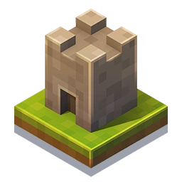

Serveur Survie Minecraft
Un serveur Minecraft survie ouvert à tous, pour toutes les plateformes.
Parfait pour jouer avec des amis ou rencontrer de nouveaux joueurs,
l'endroit idéal pour ceux qui recherchent une expérience de jeu simple avec des ajouts mineurs.
Zombie Apocalypse
C'est un jeu crée sur Scratch ou vous devez survivre à
plusieurs vagues de Zombies, à chaque niveau vous découvrirez des nouveaux zombies
avec de nouvelles méchaniques.
J'ai essayé d'aspirer un style retro/pixel avec des sons sympas,
Les musiques sont crée par Context Sensitive.

Oversilt
C'est un jeu vidéo que je souhaiterais créer, cependant comme je n'ai pas encore les connaissances nécessaires, je m'occupe unniquement de la rédaction de l'histoire.
C'est l'histoire d'une population sur une planète étrangère qui va devoir faire face sa plus grande peur, La Seconde Visite.
À travers Rabiya, une jeune adulte d'environ 19 ans, on découvre les événements tragiques qui vont suivre un grand voyage périeux.
D'autres trucs...
jsp y'aura sûrement plus de trucs!